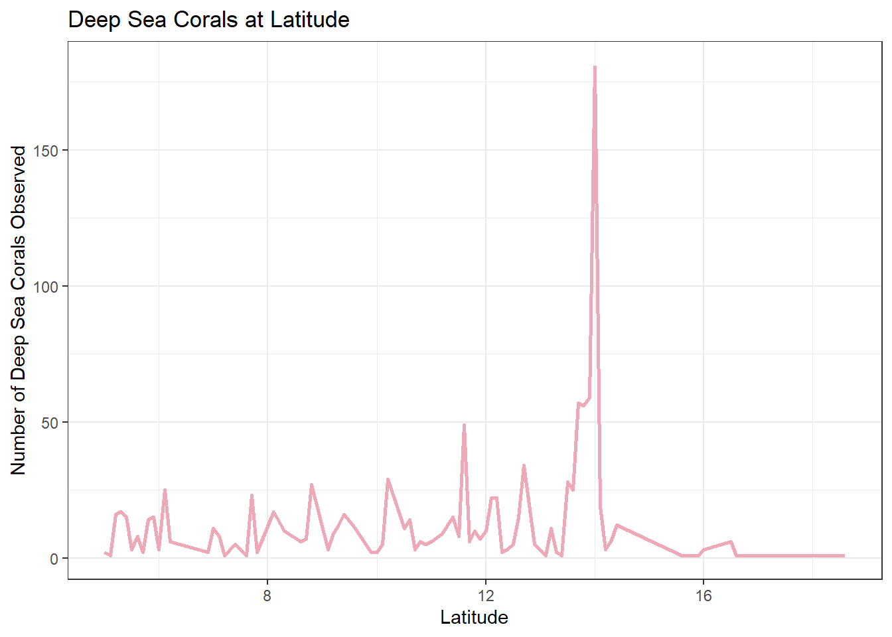
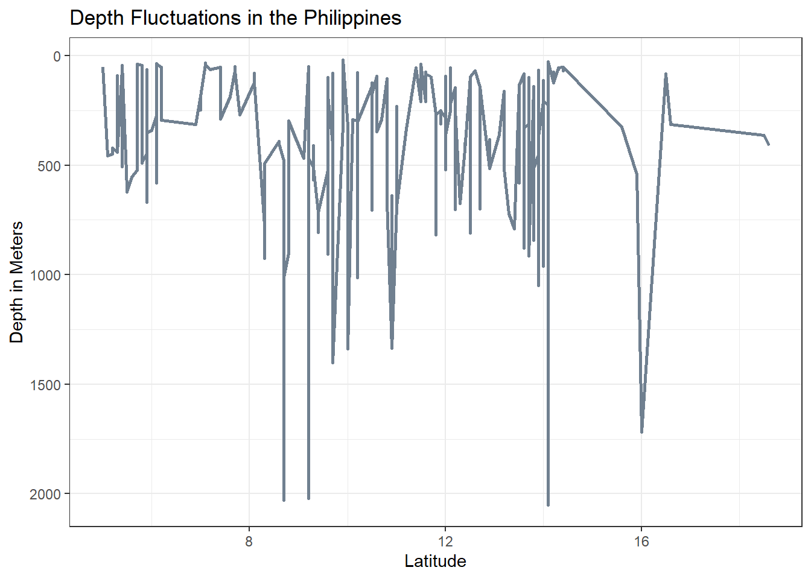

USING AN INTERACTIONS MODEL TO ANALYZE THE RELATIONSHIP BETWEEN DEEP SEA CORALS, LATITUDE, AND OCEAN DEPTH
Author
BAILEY JØRGENSEN
THE CONTEXT:
It is estimated that two-thirds of all known coral species can be classified as “deep-sea corals”. These corals exhibit a diversity similar to those of their shallow-water relatives, but they do not form symbiotic relationships with algae, do not obtain energy from sunlight (instead feeding from microorganisms in the water), and are much more resilient to cold temperatures.
Also similar to their shallow water counterparts, deep sea corals are hosts to many other forms of biodiversity. They are also extremely slow growing, and as a result, slow to recover from ecological or anthropogenic disturbance[2].
This analysis will seek to more deeply understand the environments in which deep sea corals are more likely to appear.
THE DATA:
The data used for this analysis comes from NOAA’s Deep Sea Coral Research and Technology Program (DSCRTP), and is housed at the Smithsonian National Museum of Natural History, Invertebrate Zoology Collection. It contains decades worth of data regarding deep sea corals, their taxa, spatial data, and collecting data. It is an open source data set, that is consistently being updated. (See link in the citations section, to take a look for yourself!)[3]
Here are some details from the dataset:
Number of records: 30,850
Number of coral records: 24,768
Number of sponge records: 6,082
Records with images: 245
Obviously, we have a lot of data points to work with here. Let’s begin by loading our libraries and reading in the data!
The deep sea corals dataset I chose also includes deep sea sponges. Since this analysis wants to focus on corals, I’ll have to filter that data out. In addition, there are several columns on the dataframe that I know won’t be helpful for my analysis (for example, collector data, institution data, or columns that contains a lot of NAs.) In addition to filtering out the sponge data, I will filter out those unwanted columns as well.
Code
# Filter data to only include columns I wantcorals <- corals %>%clean_names(case ="snake") %>%# Change column names to snake_caseselect(scientific_name, phylum, genus, species, individual_count, latitude, longitude, depth_in_meters, country) %>%# Choose columns I wantfilter(phylum %in%c("Cnidaria")) # Filter to exclude sponges and NA row
I know that in order to properly visualize my data, I’m going to want to make some maps. However, I also want the latitude and longitude data to be easily handled during any linear model calculations, so I decide to make a separate dataset variable, that transforms the lat long data into geometric data that I can easily add to tmaps for visualizations.
Let’s take a look at the result of our well filtered data! This data cleaning will enable us to run effective and easy to understand data analysis in the next few steps.
Code
# Create a table using kable and format it with kableExtrakable(head(corals), format ="html", caption ="Preview of Filtered Global Coral Data") %>%kable_styling(bootstrap_options =c("striped", "hover", "condensed"))
Preview of Filtered Global Coral Data
scientific_name
phylum
genus
species
individual_count
latitude
longitude
depth_in_meters
country
Pourtalosmilia conferta
Cnidaria
Pourtalosmilia
conferta
2
34.95839
-75.32464
146
USA
Pourtalosmilia conferta
Cnidaria
Pourtalosmilia
conferta
6
34.95839
-75.32464
146
USA
Pourtalosmilia conferta
Cnidaria
Pourtalosmilia
conferta
6
29.28357
-88.26665
84
USA
Pourtalosmilia conferta
Cnidaria
Pourtalosmilia
conferta
1
24.48375
-80.88314
191
USA
Desmophyllum pertusum
Cnidaria
Desmophyllum
pertusum
1
30.96684
-79.69976
396
USA
Desmophyllum pertusum
Cnidaria
Desmophyllum
pertusum
1
27.98361
-79.3331
577
Bahamas
THE EXPLORATION:
VISUALIZATION
I want to take a look at the whole scale of my data set. To do this, I decide to make a global map.
From this global map, we can see the huge volume to coral observations present in our dataset. In order to get a little more focus in my model, I decide filter the datset to a specific country, and run my analysis on that.
It could be interesting to, in the future, run the same analysis on each continent, and then cross-compare them. This would reveal interesting insights about different continents and species. Politically, it could also be an interesting view into how collecting bias might affect the results of such an analysis, since we can see that some continents contain more sample points than others. Unfortunately, this could be due to the fact that certain countries and regions are more studied than others, due to data collecting bias in the environmental sector.[1]
For the purpose of this study, however, I will filter the coral data to the Philippines. The Philippines is an area known for its coral diversity and it’s popularity in the diving community. I am curious to see how DEEP SEA corals are represented in the region, rather than the dive-able shallow coral systems.
# Create a table using kable and format it with kableExtrakable(head(phil_coral), format ="html", caption ="Preview of Filtered Philippines Coral Data") %>%kable_styling(bootstrap_options =c("striped", "hover", "condensed"))
Preview of Filtered Philippines Coral Data
scientific_name
phylum
genus
species
individual_count
latitude
longitude
depth_in_meters
country
latitude_rounded
obs_count
Coralliidae
Cnidaria
NA
NA
1
15.9708
119.672
1719
Philippines
16.0
3
Stenohelia tiliata
Cnidaria
Stenohelia
tiliata
1
6.1333
121.317
275
Philippines
6.1
25
Stylaster multiplex
Cnidaria
Stylaster
multiplex
1
5.1867
119.590
450
Philippines
5.2
16
Distichopora irregularis
Cnidaria
Distichopora
irregularis
1
7.0853
125.662
42
Philippines
7.1
8
Distichopora irregularis
Cnidaria
Distichopora
irregularis
4
7.0950
125.662
38
Philippines
7.1
8
Distichopora
Cnidaria
Distichopora
NA
1
7.0867
125.660
37
Philippines
7.1
8
Code
# Get data for base map of Philippinesph <-ne_countries(scale =10, country ="Philippines", returnclass ="sf")luzon <- ph %>%st_crop(xmin =st_bbox(ph)$xmin %>%as.numeric(),xmax =st_bbox(ph)$xmax %>%as.numeric(),ymin =13.5,ymax =18.5 ) %>%st_transform(25391)
# Make a plotggplot() +geom_line(data = phil_coral,aes(x = latitude_rounded,y = obs_count),color ="pink2",size =1) +labs(x ="Latitude",y ="Number of Deep Sea Corals Observed",title ="Deep Sea Corals at Latitude") +theme_bw()

Code
# Make a plotggplot() +geom_line(data = phil_coral,aes(x = latitude_rounded,y = depth_in_meters),color ="slategray",size =1) +labs(x ="Latitude",y ="Depth in Meters",title ="Depth Fluctuations in the Philippines") +scale_y_reverse() +theme_bw()

Hypothesize
Null: There is no relationship Alternate: There IS a relationship
[1]Konno, K., Gibbons, J., Lewis, R. and Pullin, A.S., 2024. Potential types of bias when estimating causal effects in environmental research and how to interpret them. Environmental Evidence, 13(1), p.1. (https://link.springer.com/article/10.1186/s13750-024-00324-7)
[2]Roberts, S. and Hirshfield, M. (2004), Deep-sea corals: out of sight, but no longer out of mind. Frontiers in Ecology and the Environment, 2: 123-130. https://doi.org/10.1890/1540-9295(2004)002[0123:DCOOSB]2.0.CO;2
[3]Smithsonian Institution, National Museum of Natural History. Observation date range: 1860 to 2022. Coral or sponge occurrence observations submitted to the NOAA National Database for Deep Sea Corals and Sponges (www.deepseacoraldata.noaa.gov). DSCRTP Dataset ID: NMNH_IZ. Database version: 20241022-1.